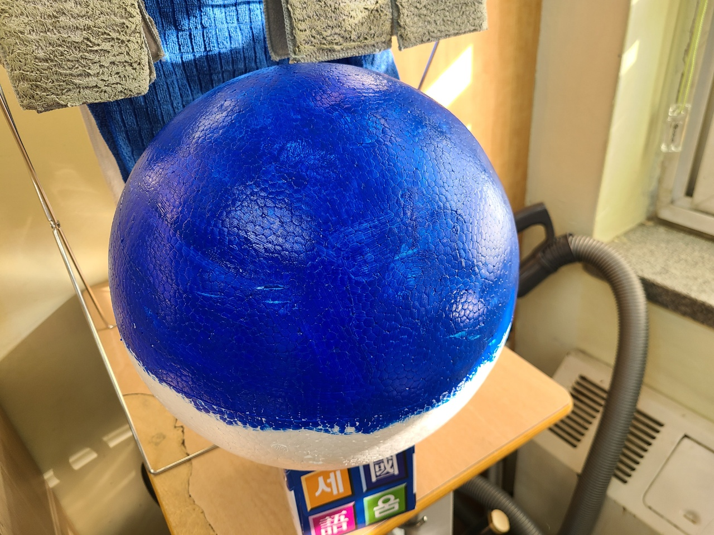
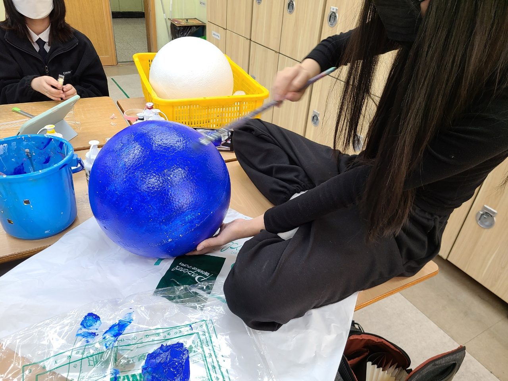
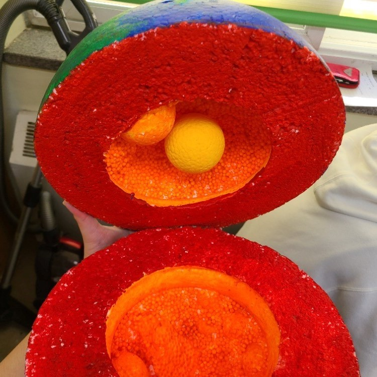
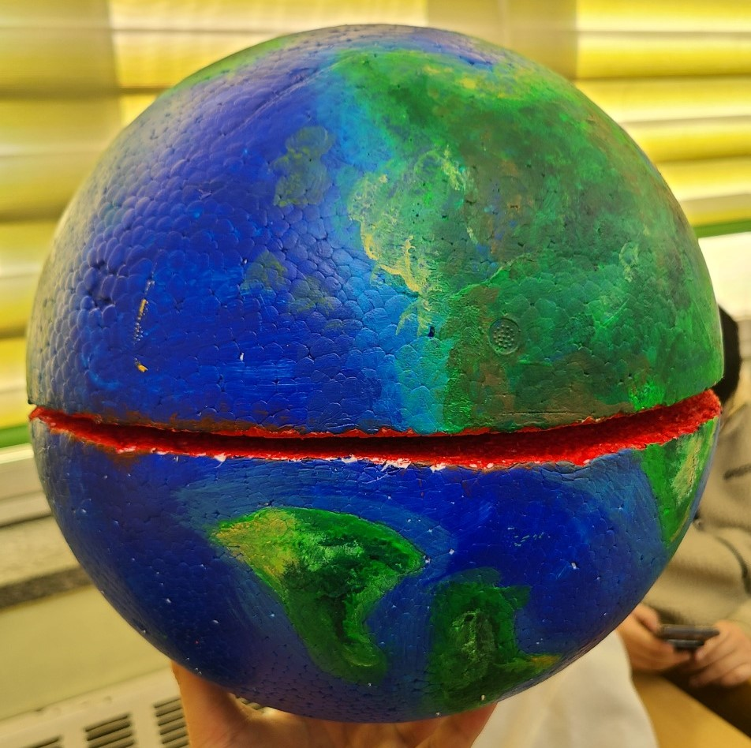

개요
지구의 내부 구조인 지각, 맨틀 그리고 핵을
제작하였습니다. 지구본을 직접 그리며 지각을
표현하였고 빨간색 주황색 노란색 순으로
맨틀 외핵 내핵을 색깔로 구별하여 나타내었습니다.
지각
지각은 지구의 가장 바깥쪽에 있으며 깊이는 약
5km~60km이고 암석으로 이루어져 있습니다. 지각은 지구 전체 부피의 1%를 차지하고
있고 깊어질수록 온도가 증가하여 맨틀부근
에서는 약 200~400˚C 에 이릅니다
맨틀
지각 아래에 위치한 부분으로 지각 바로 아래부터 2885km의 의 깊이까지에 해당되며 지구 전체 부피의 84%를 차지합니다. 맨틀은 고체 암석으로 이루어지는데 싶이및 장소에 따라 맨틀을 구성하는 암성의 성질과 상태는 다릅니다. 맨틀또한 깊어질수록 온도가 증가하는데 지각 부근에서는 500~900℃ 그리고 외핵 부근으로 가면 무려 4000℃에 이른다고 합니다.
핵
지구 중심에 위치하는 핵은 바깥쪽에 있는
외핵과 안쪽에 있는 내핵으로 나뉩니다.
외핵은 액체로 된 금속
내핵은 고체로 된 금속으로 이루어져 있습니다.
외핵은 맨틀의 끝부분인 2885km에서 깊이 5155km
까지이며 온도는 깊어질수록 증가하여
맨틀부분에 4400℃ , 내핵부부근에서는 6100℃에
이릅니다.
회전하는 외핵의 액체금속에 전류가 발생하면서
지구 자기장이 만들어지며 이는 지구바깥수천km
까지 뻗어있어 태양풍이나 우주방사선 으로 부터
지구를 보호하고 있습니다.
내핵은 외핵과 지구 중심사이에 구간으로
6371km깊이에 해당되고 온도는 5500℃ 입니다.
내핵은 달정도의 크기로 철과 니켈 등으로 이루어지며
산소나 황, 규소 같은 원소와 화합물을 이루고
있을것으로 추측합니다.
활동 과정
   스티로폼 공
바다 색 칠하기
지구 모형
지구 모형 단면
지구 모형 표면
느낀점
20604 황하은
평소 약했던 과목인 지구과학과 관련된 과제를 맡게되어 내가 잘 할 수 있을지 많은 걱정이 있었다. 다행히 모둠 친구들과의 원활한 협력을 통하여 과제를 수월하게 진행 할 수 있어 좋았고 중간 중간 작은 변수들이 있었지만 유연한 대처를 통해 해결 할 수 있어 뿌듯했다. 또한 지각와 지구의 구조를 조사하며 좋아하지 않았던 지구과학
과목의 흥미를 얻을 수 있어서 개인적으로 많은 의미가 있었던
활동이었던거 같다.
20620 최선우
지구 모형과 지각구조를 표현하기 위해 교과과정과 교과과정 외의 정보도 찾아보면서 지구과학에 대한 공부를 할 수 있었고 표현하는 과정에서 구에대한 정보 3d랜더링 등 여러분야에 걸쳐 찾아보며 지식을 쌓을수 있었다.
또한
지구본을 채색하면서 다양한 도구들을 사용하며
새로운 기법도 배울 수 있었다.

활동중인 모습